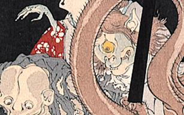

← 图鉴索引

一つ目の化物。青白く頭髪が長い。耳が尖っていて、口元は獣のようである。
著作者：月岡芳年／出典：親書誌：A80_prague_0016：おもゐつづら；オモイツヅラ／日付：2011／資源識別子：A80_prague_0016_0004_0000
Copyright (c)2010- International Research Center for Japanese Studies, Kyoto, Japan. All rights reserved.